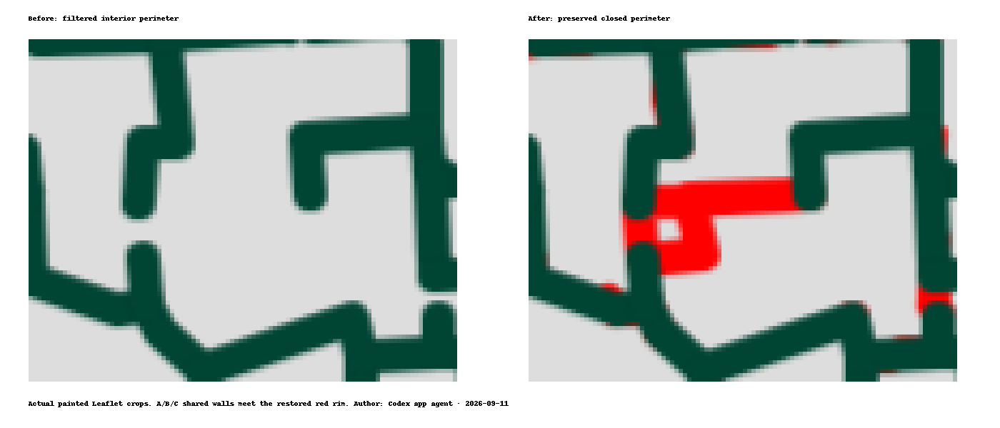
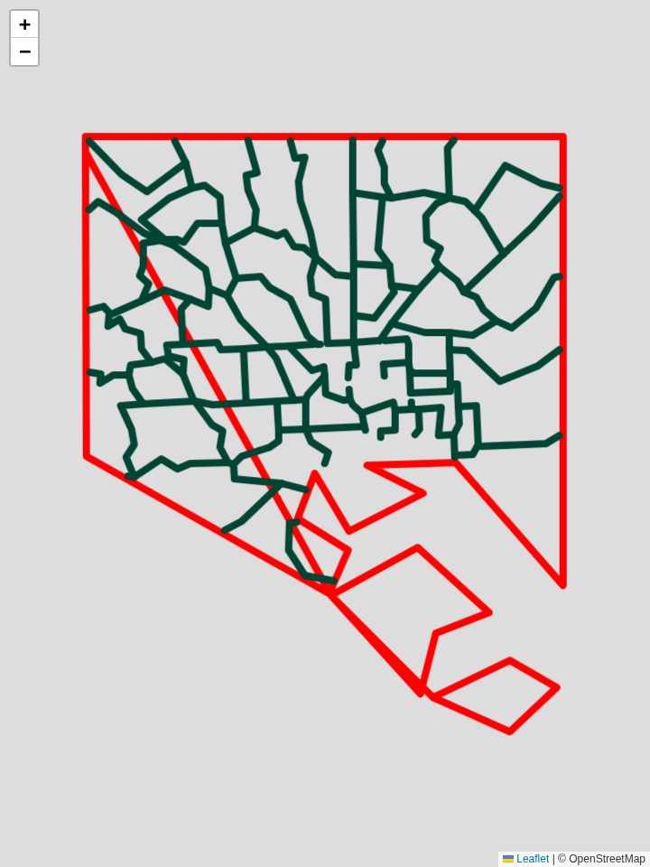
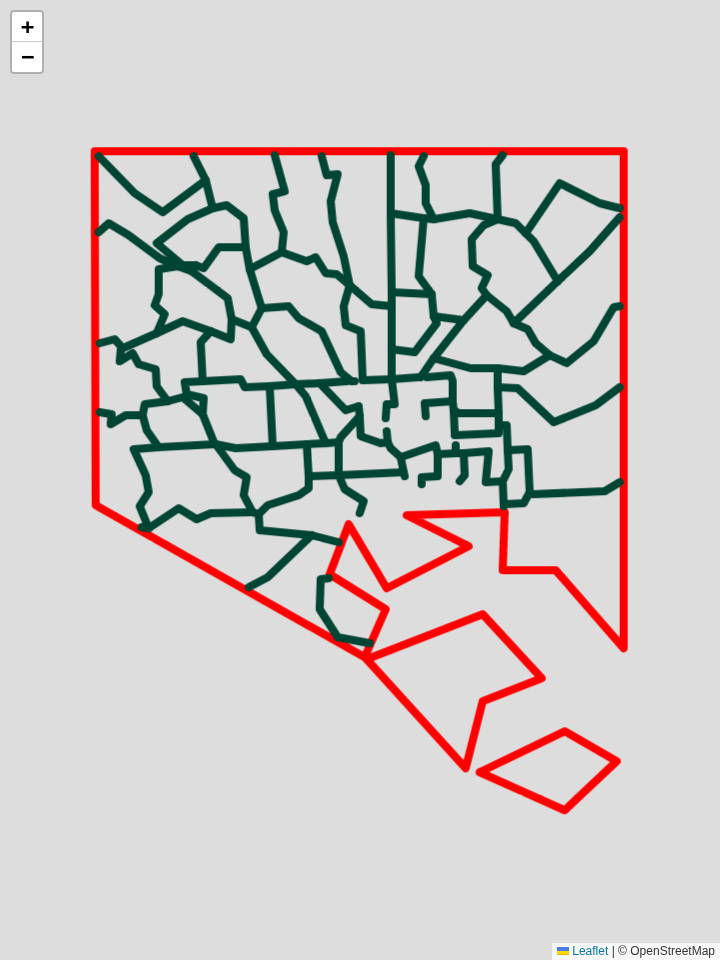

The general exterior-component cutoff now preserves interior perimeters. Existing floor, grooves and exterior walls are unchanged; the central rim connects all three shared-wall junctions.
Interactive before/after downloaded STL close-up · Checks and actual geometry differences

Baltimore retains 77 additional interior paths, including tiny source slivers. Two produce additional disconnected raised shells outside the existing floor; base coverage has not been redesigned. Baltimore STL · DC STL (unchanged).
These presets use the frozen public inputs and original reproduction settings. Each opens the actual app and saves its settings on this local origin.
Downloads are unified solids; the preview retains the original translucent boundary objects. To inspect the preserved CSG path, append ?geometry=csg to the app URL (Baltimore is slow).
Investigation and commands · Measured results
Baltimore's separate closed rings now remain separate paths. The diagonal connectors are removed from the map and STL. Its three exported components remain closed; DC's STL is byte-identical. The unchanged simplifier selects slightly different coastal vertices with separate rings.


Click an image for the full painted map and 3D preview. STL and SVG checks.
Author: Codex app agent · 2026-09-11{kind=link}
{kind=link}